|
You are here : Control
System Design - Index | Book Contents |
Chapter 25
25. MIMO Controller Parameterisations
Preview
In this chapter we will extend the SISO design methods of Chapter 15
to the MIMO case. We will find that many issues are common between the
SISO and MIMO cases. However, there are distinctive issues in the MIMO
case which warrant separate treatment. The key factor leading to these
differences is once again the fact that MIMO systems have spatial
coupling, i.e. each input can affect more than one output and each
output can be affected by more than one input. The consequences of this
are far reaching. Examples of the difficulties which arise from these
interactions include stability, non minimum phase zeros with their
directionality properties and tracking performance.
Notwithstanding these differences, the central issue in MIMO control
system design still turns out to be that of (approximate) inversion.
Again, because of interactions, inversion is more intricate than in the
SISO case, and we will thus need to develop more sophisticated tools for
achieving this objective.
Summary
- The generalization of the affine parameterization for a stable
multivariable model,
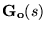,
is given by the controller representation
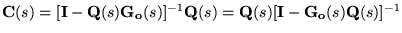
yielding the nominal sensitivities
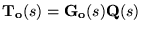
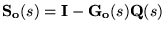
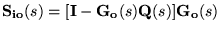
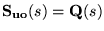
- The associated achieved sensitivity, when the controller is
applied to
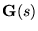
is given by
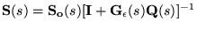
where
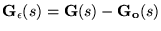
is the additive modeling error.
- In analogy to the SISO case, key advantages of the affine
parameterization include
- explicit stability of the nominal closed loop if and only if
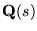
is stable.
- highlighting the fundamental importance of invertibility, i.e.
the achievable and achieved properties of
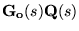
and
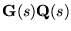.
- Sensitivities that are affine in
;
this facilitates criterion-based synthesis, which is
particularly attractive for MIMO systems.
- Again in analogy to the SISO case, inversion of stable MIMO
systems involves the two key issues
- relative degree; i.e., the structure of zeros at infinity
- inverse stability; i.e., the structure of NMP zeros
- Due to directionality, both of these attributes exhibit additional
complexity in the MIMO case
- The structure of zeros at infinity is captured by the left (right)
interactor,
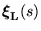
(
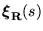).
- Thus
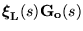
is biproper, i.e., its determinant is a non zero bounded quantity
for
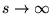.
- The structure of NMP zeros is captured by the left (right) z-interactor,
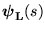
(
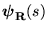).
- Thus, analytically,
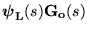
is a realization of the inversely stable portion of the model (i.e.,
the equivalent to the minimum phase factors in the SISO case).
- However, the realization
- is non minimal
- generally involves cancellations of unstable pole-zero
dynamics (the NMP zero dynamics of
).
- Thus, the realization
- is useful for analyzing the fundamentally achievable
properties of the key quantity
,
subject to the stability of
- is generally not suitable for either implementation or inverse
implementation, as it involves unstable pole-zero cancellation.
- A stable inverse suitable for implementation is generated by model
matching which leads to a particular linear quadratic regulator (LQR)
problem which is solvable via Riccati equations.
- If the plant model is unstable, controller design can be carried
out in two steps
- pre-stabilization, for example via LQR
- detailed design by applying the theory for stable models to
the pre-stabilized system.
- All of the above results can be interpreted equivalently in either
a transfer function or a state space framework; for MIMO systems,
the state space framework is particularly attractive for numerical
implementation.
|